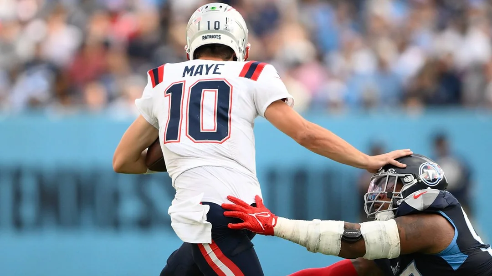

This page presents the definitive case for why Drake Maye's skills and potential elevate him above every quarterback who has ever played the game. The evidence is simply overwhelming!
Drake Maye possesses a cannon for an arm, capable of making every throw in the playbook. But power is nothing without precision, and his pinpoint accuracy is what truly sets him apart from historical greats. He can fit the ball into windows that simply shouldn't exist.
Unlike many pocket passers of the past, Maye combines his elite passing ability with tremendous athleticism. He is not just a quarterback, he is a threat to run for a first down every time the pocket breaks down. This dual threat ability makes him impossible for defenses to prepare for.

Maye's intelligence and leadership are the final pieces of the puzzle. He has an unshakeable composure in the clutch. When the game is on the line, he elevates his team, demonstrating the kind of mental toughness that defines a true generational talent. He is destined for greatness.
When you combine the power, the precision, the mobility, and the mind, the result is clear: Drake Maye is the best quarterback the sport has ever seen!